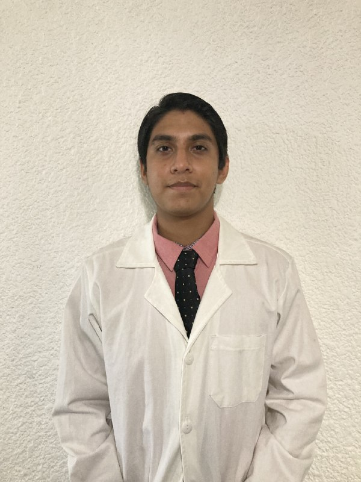

Acerca de mi
¡Hola! Soy un estudiante de cuarto semestre en el Tecnológico de Monterrey, con un profundo interés en todo lo relacionado al cerebro humano, trabajar con personas de todas las edades, investigar, enseñar y, sobre todo, aprender.
Contacto
Educación
2020 - Presente
Promedio: 9.50Instituto Tecnológico de Estudios Superiores de Monterrey
Medicina2017 - 2020
Promedio: 9.98Preparatoria Colegio Antonio Repiso
2014 - 2017
Promedio: 9.50Escuela Secundaria Técnica No.1 "Álvaro Obregón"
ElectrónicaHabilidades
Desarrollo web
Diseño gráfico, edición y software
Soft Skills
Instrumentos
Proyectos personales
Representante de sociedad académica
Representante de Véritas, sociedad académica en el Tecnológico
de
Monterrey, durante el presente ciclo escolar
(Presente)
ChemPound
Desarrollo de una aplicación web, en la cual se pueden combinar
elementos químicos para conocer el nombre del compuesto generado
(Presente)
Investigación
Coautor de abstract
coautor del abstract Solving a
Challenging
Diagnosis: Intracranial Atherosclerosis vs Moyamoya Disease
(Octubre 2020)